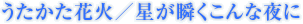

インターネット発の驚異のユニットsupercellが『魔法使いの夜』のＥＤテーマソングを担当することになりました！
インターネット発! これまでニコニコ動画にアップした楽曲の総再生回数は2,000万回を優に超える、コンポーザーのryoと多数のクリエーターからなる驚異のエンターテインメント・ユニット、supercell。
ryoの描く歌詞・曲の世界観が多くのユーザーに支持され、第24回日本ゴールドディスク大賞「ザ・ベスト5ニュー・アーティスト」受賞。
Official Web

supercell
SRCL-7331～SRCL-7332／シングル／2010.8.25／\1,575(税込)
【収録曲】 （全曲とも作詞・曲・編曲：ryo、Vocal：nagi）
- M-1. うたかた花火・・・テレビ東京系全国アニメ「NARUTO-ナルト-疾風伝」EDテーマソング（2010.07～09クール）
- M-2. 星が瞬くこんな夜に・・・PCゲーム「魔法使いの夜」EDテーマソング
- M-3. Worldwide Love
- M-4. うたかた花火 -Instrumental-
- M-5. 星が瞬くこんな夜に -Instrumental-
- M-6. Worldwide Love -Instrumental-